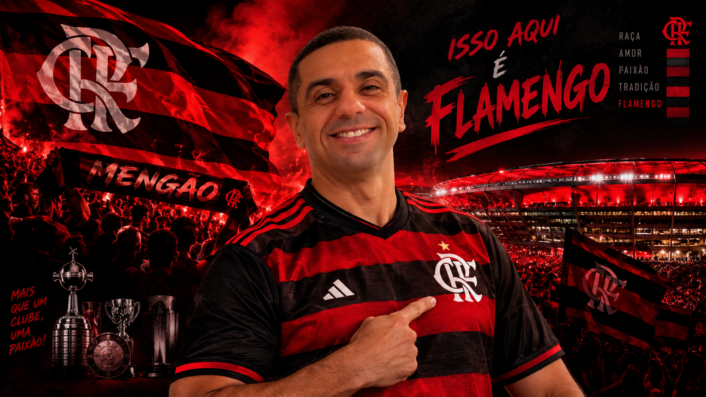

O MAIS QUERIDO DO BRASIL
O Flamengo é um dos clubes mais populares do mundo, com mais de 40 milhões de torcedores. Nasceu como clube de remo no Rio de Janeiro, em 1895, e passou a disputar futebol em 1911. Manda seus jogos no Maracanã e treina no Ninho do Urubu. O uniforme com faixas vermelhas e negras deu ao time o apelido de "Manto Sagrado".
| Competição | Anos |
|---|---|
| Mundial / Intercontinental | 1981 |
| Libertadores (4 vezes) | 1981, 2019, 2022, 2025 |
| Campeonato Brasileiro (9 vezes) | 1980, 1982, 1983, 1987, 1992, 2009, 2019, 2020, 2025 |
| Copa do Brasil (5 vezes) | 1990, 2006, 2013, 2022, 2024 |
| Campeonato Carioca | Maior campeão, com quase 40 títulos |
Uma vez Flamengo, sempre Flamengo!